Generación de electricidad mediante ciclo Rankine con concentrador solar lineal Fresnel y fluido caloportador Dowtherm-A
Presentación Final — Ingeniería de Procesos
Herramientas como Aspen Plus resuelven miles de ecuaciones de balances de materia y energía, permitiendo modelar el comportamiento real de fluidos.
Evaluar escenarios críticos y condiciones extremas sin comprometer equipos ni personal.
Ajustar parámetros operativos para maximizar eficiencia energética y rendimiento del sistema.
Reduce gastos en pruebas físicas, rediseños y paradas no programadas mediante validación virtual.
Desarrollar, simular y analizar un ciclo termodinámico de potencia integrado a una fuente térmica solar comparando un simulador construido y un simulador comercial.
Balances de materia y energía usando Dowtherm-A como caloportador y agua como fluido de trabajo.
Cuantificar la generación eléctrica a partir de una carga térmica de entrada determinada.
Identificar restricciones como la contrapresión de turbina para evitar condensación (límite: 18 bar).
Evaluar eficiencia térmica global y propuestas de mejora para maximizar el aprovechamiento solar.
Permite operar el campo solar hasta 350°C a baja presión. Usar agua directamente requeriría >165 bar, incrementando costos y riesgo operativo.
Dos lazos cerrados que interactúan térmicamente: el lazo de aceite térmico (HTF) y el ciclo Rankine de potencia.
Dowtherm-A absorbe calor del campo solar (B3) a 350°C y lo transfiere al agua a través del intercambiador B5, saliendo a 320°C. Flujo: 10,000 kg/h a 5 bar.
El agua se evapora en B5, se expande en la turbina (40→18 bar) generando 61.18 kW, se condensa y es bombeada de regreso. Flujo: 1,500 kg/h.
| Filas de espejos | 50 |
| Ancho de espejo | 1.0 m |
| Largo de fila | 100 m |
| Área total | 5,000 m² |
| DNI (irradiancia) | 850 W/m² |
| T entrada | 350°C |
| T salida | 320°C |
| Cp | 2.2 kJ/(kg·K) |
| Flujo másico | 10,000 kg/h |
| U intercambiador | 1.5 kW/(m²·K) |
| T vapor (sobrecalent.) | 340°C |
| P alta (turbina entrada) | 40 bar |
| P descarga (turbina salida) | 18 bar |
| η turbina | 85% |
| η bomba | 75% |
| Flujo de agua | 1,500 kg/h |
| T ambiente | 25°C |
| Horas/día | 8 h |
| Días/año | 280 |
Simulador termodinámico interactivo en la web con visualización 3D en tiempo real
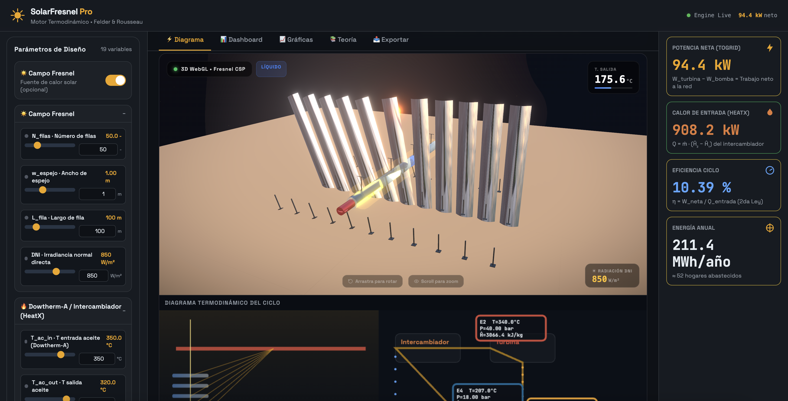
Visualización central de las propiedades termodinámicas de cada corriente del circuito en tiempo real.
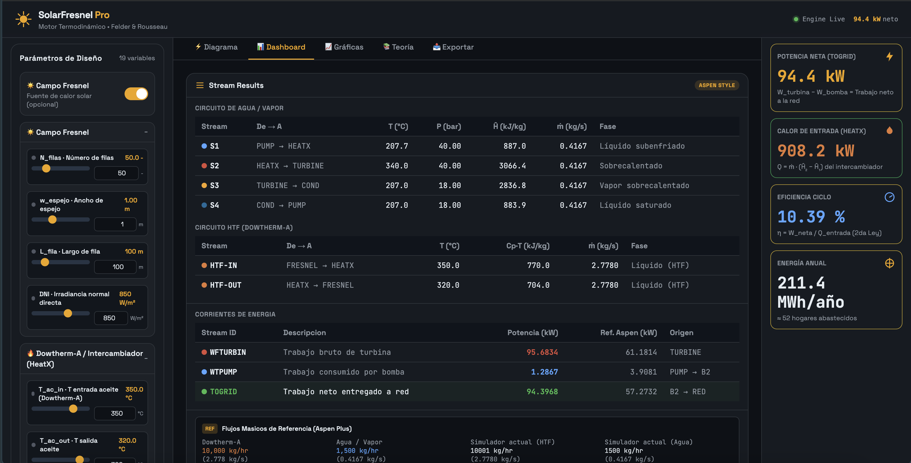
Gráficos interactivos dinámicos que facilitan el análisis de pérdidas térmicas y generación mecánica.
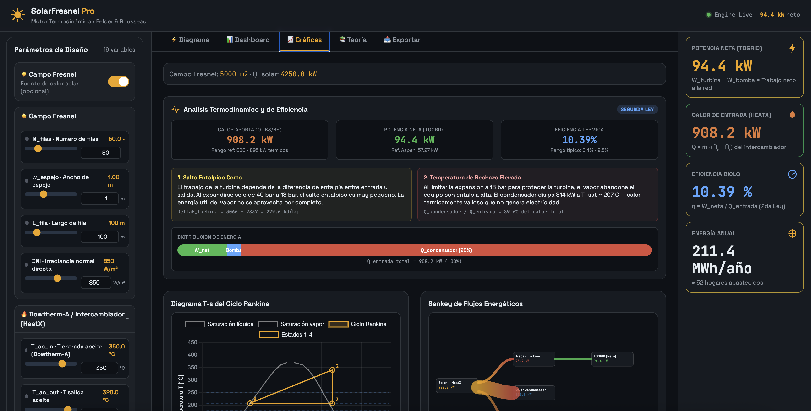
Evaluación del comportamiento de la planta bajo diferentes condiciones de radiación solar estacional.
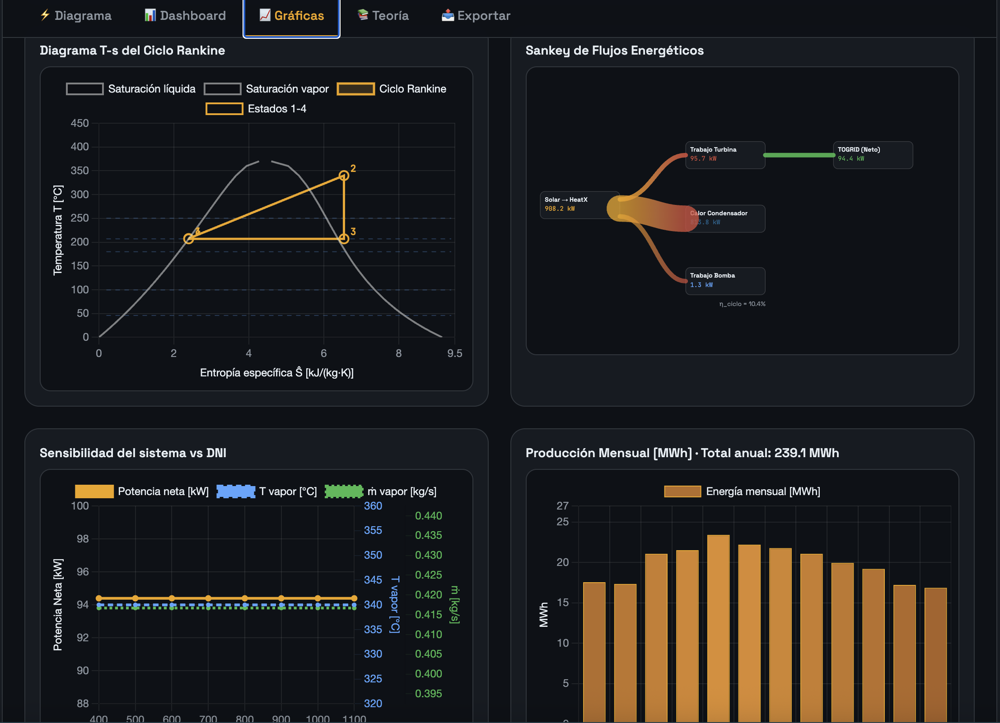
Generador automático de reportes de balance químico y comparación en tiempo real frente al estándar comercial.
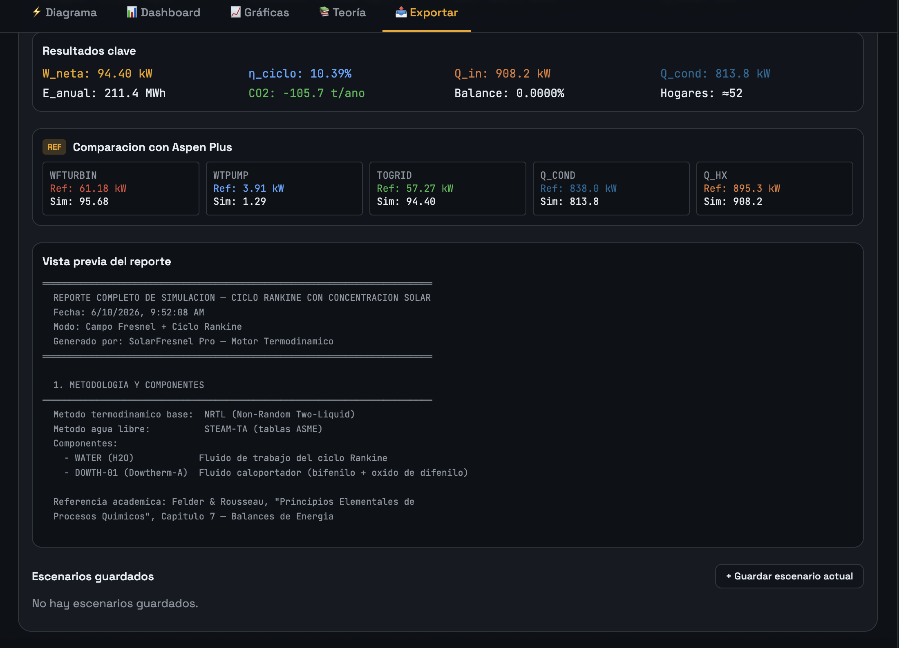
| Estado | Ubicación | T (°C) | P (bar) | H (kJ/kg) | S (kJ/kg·K) | Fase |
|---|---|---|---|---|---|---|
| S1 | Salida bomba | 208.8 | 40 | 163 | 0.56 | Líquido |
| S2 | Salida intercambiador | 332.8 | 40 | 3,092 | 7.01 | Vapor 100% |
| S3 | Salida turbina | 259.3 | 18 | 2,340 | 7.24 | Vapor |
| S4 | Salida condensador | 207.2 | 18 | 145 | 0.50 | Líquido sat. |
Configuración rigurosa de bloques industriales con resolución simultánea de ecuaciones de estado y balances termodinámicos.
Representación gráfica de los equipos de proceso y corrientes de material/energía construidos en el simulador comercial.
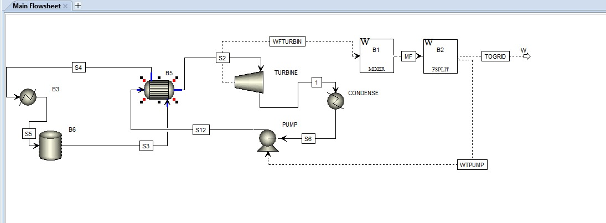
Definición y especificación de las sustancias químicas puras que componen las fases activas del sistema en el simulador.
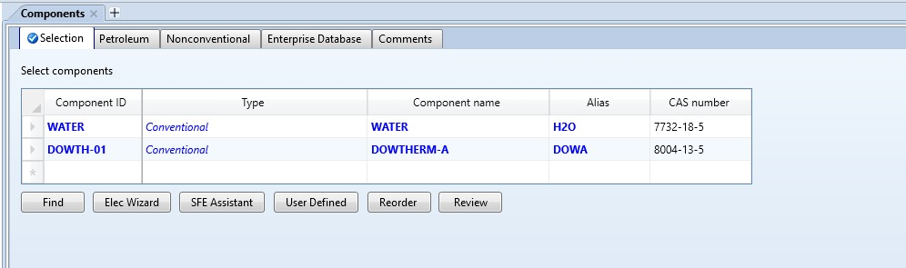
Configuración de los métodos termodinámicos que predicen el comportamiento de fases y el cálculo de entalpías.
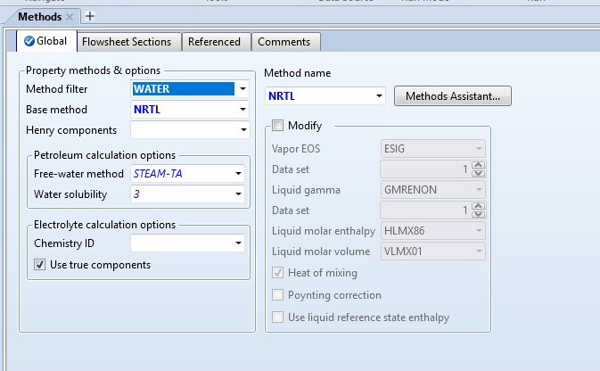
Definición de las condiciones mecánicas del impulsor de alimentación de agua hacia la caldera de alta presión.
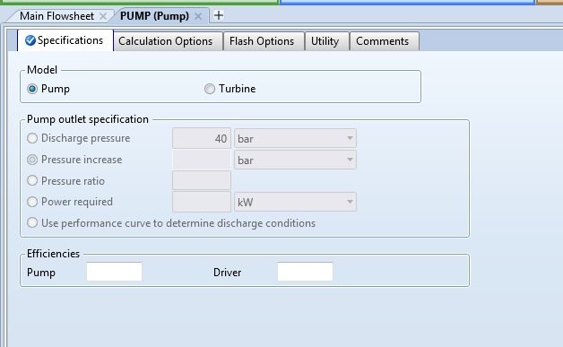
Acopla térmicamente el lazo de aceite térmico caliente (HTF) con el ciclo Rankine para generar vapor.
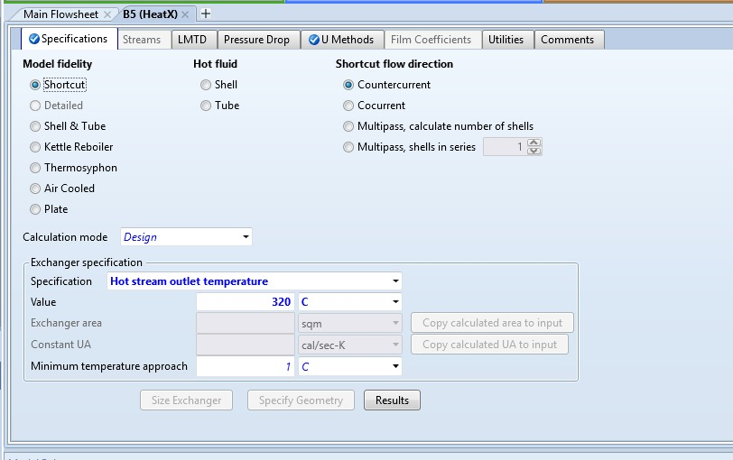
Simula la ganancia neta de entalpía del fluido térmico HTF al pasar por el receptor lineal Fresnel expuesto al sol.
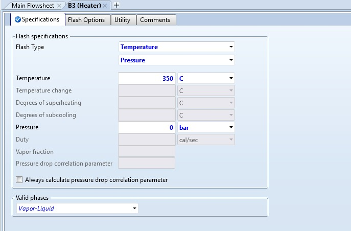
Mezclador isobárico para equilibrar las corrientes de retorno de Dowtherm-A antes de reingresar al colector B3.
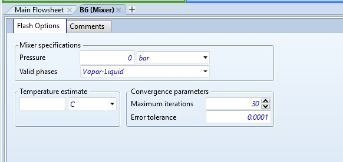
Valores numéricos de masa y energía al final de la convergencia global de la simulación.
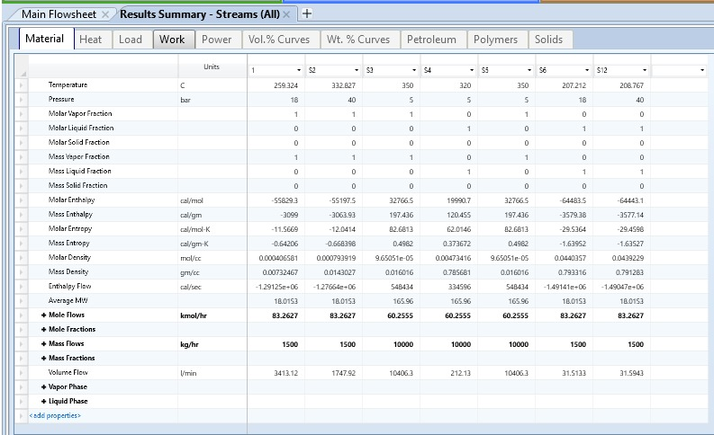
Balances de energía mecánicos del ciclo para el cálculo del trabajo entregado a la red de distribución.
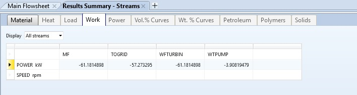
| Parámetro | Simulador Web | Aspen Plus | Diferencia |
|---|---|---|---|
| W Turbina | 61.18 kW | 61.1814 kW | ≈ 0% |
| W Bomba | 3.91 kW | 3.9081 kW | ≈ 0% |
| W Neto | 57.27 kW | 57.2732 kW | ≈ 0% |
| Calor Aportado | 895 kW | 895.297 kW | 0.03% |
| Calor Rechazado | 838 kW | 838.024 kW | ≈ 0% |
| Eficiencia | 6.4 – 9.5% | 6.4 – 9.5% | Consistente |
De 895 kW térmicos, solo 57.27 kW se convierten en electricidad. El condensador rechaza 838 kW a >200°C.
Al expandir solo de 40 a 18 bar, el salto entálpico es pequeño. La energía "útil" del vapor no se aprovecha completamente.
El vapor sale de la turbina a 259°C (aún con alta entalpía). El condensador disipa 838 kW a Tsat ≈ 207°C, energía térmicamente valiosa.
Obligatoria para evitar condensación en la turbina. A menor presión, el vapor cruza la línea de saturación → erosión destructiva de álabes.
Expandir el vapor hasta presiones de vacío (0.05 – 0.1 bar) sin alcanzar el punto de rocío. Multiplicaría significativamente el trabajo mecánico neto.
Regresar el vapor parcialmente expandido al intercambiador B5 para elevar su temperatura. Evita humedad en álabes, permite expandir a menor presión.
Aprovechar los 838 kW del condensador a >200°C para procesos industriales, desalinización o absorción térmica. Eficiencia global >70%.
Balances de masa y energía verificados. El simulador web reproduce fielmente los resultados de Aspen Plus con diferencias <0.03%. Trabajo neto: 57.27 kW.
El aceite térmico cumple su función de transferir la carga calorífica sin requerir presiones extremas en el lazo primario, validando su selección frente al uso directo de agua.
La contrapresión a 18 bar limita la eficiencia eléctrica, pero es una restricción de diseño obligatoria (Segunda Ley de la Termodinámica). Amplio margen de mejora con sobrecalentamiento y vacío.
El simulador interactivo demuestra que herramientas web de código abierto pueden complementar simuladores comerciales, ofreciendo accesibilidad y valor educativo sin costo de licencia.
Simulación de sistema de generación eléctrica con ciclo Rankine solar. Comparativa entre simulador web interactivo y Aspen Plus.